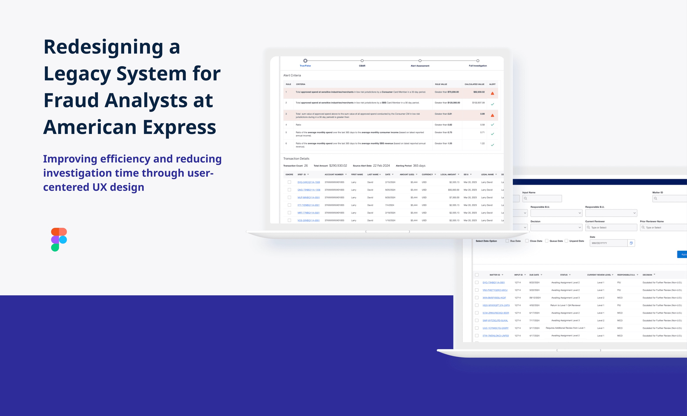

At American Express, I redesigned GAITS, a legacy fraud investigation tool that was actively slowing down analysts and creating dangerous error conditions. The result: a new platform (FCP) that cut investigation time in half, improved analyst efficiency by 25%, and eliminated accidental alert dismissals entirely. Every second of friction in a fraud workflow has direct financial consequences.
American Express processes hundreds of millions of transactions daily. Behind the scenes, a specialized team of fraud analysts reviews flagged activity, investigating suspicious transactions, making true/false determinations, and managing active fraud cases. The tool they used for all of this was GAITS, the Global Automated Investigation Tool System.
GAITS was functional. It was not good. Built for an era that no longer existed, it had accumulated years of technical and UX debt. My role was to redesign it as FCP, the Financial Crime Platform, a modern, analyst-centered investigation tool that matched the actual complexity of the work fraud analysts do every day.
Before designing a single screen, I needed to understand what was actually broken. I started with a formal heuristic evaluation of GAITS against Nielsen Norman Group's 10 usability heuristics. What I found was significant:
"Every misclick in a fraud investigation isn't just lost time, it's potentially missed fraud, uncaptured losses, and a compromised cardholder."
The business stakes were real. Fraud analysts investigate dozens of cases daily. Multiply even 30 seconds of unnecessary navigation friction across an analyst team over hundreds of daily cases, and the operational cost adds up fast. The interface wasn't just frustrating, it was expensive.
Discovery: Heuristic evaluation of GAITS against NN/g principles, followed by stakeholder interviews with analysts at multiple experience levels. I specifically prioritized talking to new analysts, they revealed the steepest parts of the learning curve the system created.
Definition: Synthesized findings into a journey map of the full investigation lifecycle, from alert assignment through case closure. This artifact became the shared reference that aligned product, engineering, and fraud operations on what the new system needed to support.
Design: Iterated from rough conceptual sketches through lo-fi wireframes to high-fidelity Figma prototypes. Every design decision was tied back to a specific research finding. Sprint planning in Jira kept engineering and product in sync throughout.
Validation: Conducted moderated usability testing sessions with fraud analysts using interactive prototypes. Findings drove two additional rounds of iteration before final handoff.
The original alert page allowed a single misclick to permanently dismiss an active fraud alert with no confirmation. This was the most dangerous UX issue in the system, and the fix was not just adding a modal.
The redesigned True/False Alert page introduced a multi-layer safeguard: a confirmation modal with clearly weighted Confirm/Cancel actions, destructive styling on irreversible decisions, and friction that scaled with consequence. Low-risk actions stayed fast; high-stakes actions required deliberate confirmation.
Analysts previously had no way to see where they were in a multi-step investigation, no breadcrumbs, no progress indicator, no stage labels. I added a persistent step tracker across the top of the investigation view showing the full sequence: True/False → Case Assignment → Full Investigation → Resolution.
This single change did two things: reduced analyst anxiety about where they were in a complex process, and measurably cut the time spent on orientation, figuring out what step came next.
The admin view needed to give team leads a real-time picture of workload distribution. The redesigned admin page added advanced filter controls for case assignment, live case count by analyst and status, and a streamlined bulk-assignment flow that reduced a multi-step manual process to a single action. What previously took 8+ interactions now took 2.
"Pending" a case was a common but inconsistently handled action in GAITS. The FCP redesign introduced a structured 5-step modal: empty state → reason dropdown → optional text input → date picker → confirmation summary. Each step validates before progressing. No incomplete submissions reach the system.
The original upload experience gave analysts no indication of whether a file upload succeeded, failed, or was in progress. The FCP redesign introduced drag-and-drop upload with real-time validation, visible file state, individual download options, and a delete confirmation modal, protecting analysts from accidental data loss in the same way the alert confirmation protected them from accidental dismissals.
Post-launch metrics confirmed the design was working. But the numbers alone don't tell the full story:
This project reinforced something I believe deeply: internal tools deserve the same quality of design attention as consumer products, maybe more. The people who use them work full shifts in high-stress environments where mistakes have real consequences. They didn't choose GAITS. They were assigned it.
The most valuable methodological decision was starting with a formal heuristic evaluation before any stakeholder interviews. Having a documented violation list when I walked into analyst conversations gave us a shared vocabulary for problems that had previously been described only as vague frustration. It accelerated trust, analysts felt heard because I could name what was wrong before they had to explain it.
"Design isn't just about making things look better. It's about making people's work feel possible."
Read the full case study documentation, including research artifacts, heuristic evaluation findings, and additional design rationale.
Full Case Study Documentation